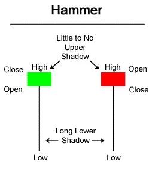
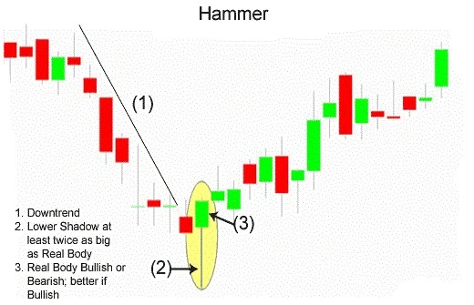

वित्तीय बाजारों में ट्रेडर विशिष्ट समय अवधि के भीतर किसी विशिष्ट मूल्य के बारे में विश्लेषण और निगरानी करने के लिए कैंडलस्टिक्स का उपयोग करते हैं। कैंडलस्टिक पैटर्न मार्केट गतिशीलता को समझने के लिए सबसे लचीले तकनीकी संकेतक होते हैं। ये पैटर्न ट्रेडर को किसी वित्तीय एसेट के लिए मार्केट सेंटिमेंट का मूल्यांकन करने में मदद कर सकते हैं। उदाहरण के लिए, हैमर कैंडलस्टिक एक बुलिश पैटर्न है जो एक एसेट की कीमत खुलने से गिरती है, सपोर्ट स्तर के पास पहुंचती है और फिर ऊपर उछाल लेती है ताकि उच्च को छू सके।
बाजार के ऊपर बात करते हुए, हैमर कैंडलस्टिक फॉर्मेशन एक लोकप्रिय पैटर्न है। हैमर उलटी बुलिश पैटर्न के रूप में उपयोग किया जाता है, लेकिन केवल जब यह निश्चित शर्तों के तहत प्रकट होता है। पैटर्न आमतौर पर डाउनट्रेंड के नीचे बनता है, जिससे पता चलता है कि बाजार नीचे की ओर जा रहा है।
| What is Hammer Candlestick? |
हथौड़ा कैंडलस्टिक एक डाउनट्रेंड के नीचे पाया जाता है और बाजार में एक संभव (बुलिश) उलट पलट लेने का संकेत देता है। हथौड़ा एक कैंडलस्टिक पैटर्न होता है, जब किसी स्टॉक का खुलासा होता है तो उसका दिन भर में काफी नीचे जाने के बाद दोबारा खुलासा करके खत्म होता है। कैंडलस्टिक पैटर्न हाथौड़े की तरह दिखता है, जिसमें दिन के नीचे की ओर से लंबी छोटी छड़ी होती है जो हैंडल की तरह लगती है और खुलने और बंद होने वाली मोम का बॉडी हैंडल के सिर की तरह दिखती है। लोअर विक आमतौर पर कैंडल बॉडी के दोगुना होता है लेकिन इससे भी बड़ा हो सकता है। हथौड़ा कैंडल का स्पष्ट विवरण प्राप्त करने के लिए कृपया नीचे चार्ट देखें...

एक बुलिश हैमर कैंडलस्टिक तब बनता है जब उच्चतम और समाप्ति एक समान होते हैं और इसे एक अधिक मजबूत फॉर्मेशन के रूप में देखा जाता है क्योंकि बैल ने संपूर्ण रूप से सहमति का अस्वीकार कर दिया था इसके अलावा बैल शुरुआती कीमत से भी अधिक कीमत तक की कीमत को ऊपर ले जाने में सफल रहा था।
हैमर का लंबा निचला छायांभित भाग इस बात का संकेत देता है कि बाजार ने समर्थन और मांग को ढूंढने के लिए परीक्षण किया था। जब बाजार ने समर्थन क्षेत्र, दिन के निचले स्तरों, खोज लिया तो बैल्स मूल्यों को ऊंचा करने लगे और खुलने के निकट नजदीक तक ले गए। इस प्रकार, बुलिश उतार-चढ़ाव ने बुल्स द्वारा अस्वीकृत किया गया था।

| Importance of Hammer Candlestick Chart |
| Limitations of Using Hammer Candlesticks |
कुछ भी नहीं दिखाई देता है कि पुष्टि के बाद कीमत ऊपर की ओर जारी रहेगी। लंबी छायादार हथौड़ा और मजबूत पुष्टिकरण कैंडल दो अवधियों के भीतर कीमत को बहुत ऊपर धकेल सकते हैं। यह खरीदने के लिए एक आदर्श स्थान नहीं हो सकता क्योंकि स्टॉप लॉस प्रवेश बिंदु से दूर हो सकता है, जिससे ट्रेडर को जोखिम का सामना करना पड़ता है जो उसके लाभ के योग्य नहीं होता है।
हथौड़ा के द्वारा किसी मूल्य लक्ष्य को प्रदान नहीं किया जाता है, इसलिए हथौड़ा ट्रेड के लिए बेहतर रिवार्ड का पता लगाना कठिन हो सकता है। निकास दूसरे प्रकार के कैंडलस्टिक पैटर्न या विश्लेषण पर आधारित होने चाहिए।